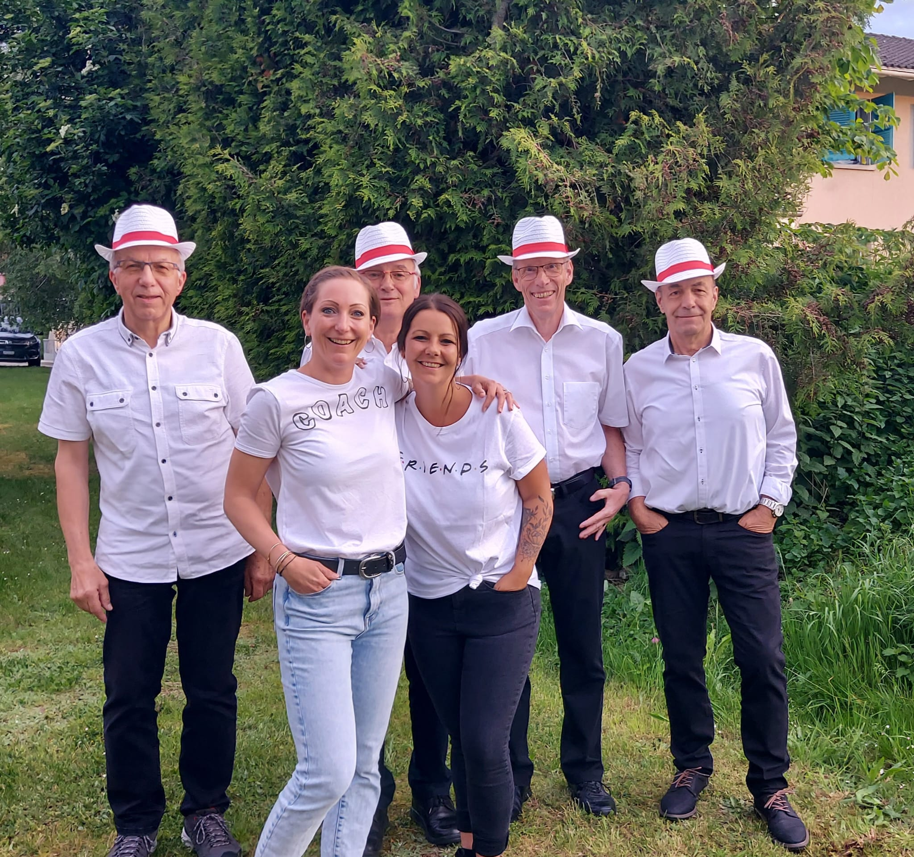

Présentation
Fondé en 1982 par M. Raphaël Droux, le chœur d'enfants de Semsales suit son petit bout de chemin.
- Pour son 20e anniversaire, le chœur d'enfants a invité les anciens membres et créé un concert sur le thème des prénoms, dans une mise en scène de Mireille Balmat. À cette occasion, un nouveau logo ainsi qu'un nouveau nom moins anonyme, « Les Cœurs Semsa's », ont été inaugurés. Ce logo, inventé par M. Bruno Yerly de La Tour-de-Trême, représente la vieille tour et la tour de l'église actuelle se serrant la main sur une clé de sol et une portée remplie de notes en forme de cœurs…
- Pour son 25e anniversaire, les écoles primaires de Semsales et le chœur d'enfants n'ont fait qu'un en créant le spectacle du « Musée enchanté », mis en scène par René Gothuey.
- Pour son 40e anniversaire, le chœur d'enfants a de nouveau invité les anciens membres pour deux soirs de spectacle et un repas d'anniversaire. En 1re partie, le petit chœur est parti à la rencontre du monde des animaux ; en 2e partie, le grand chœur, accompagné de ses anciens membres, a parcouru les tubes de ces 40 dernières années. Nous en avons aussi profité pour donner un coup de peps à notre logo grâce à l'agence de publicité Point Carré !


Le chœur est divisé en deux groupes depuis quelques années :
- Le petit chœur Semsa's : enfants de la 1re enfantine à la 2e primaire
- Le grand chœur Semsa's : enfants de la 3e primaire jusqu'à la 1re année du CO (ou plus si désir !)
L'effectif est en moyenne d'une quarantaine d'enfants, qui assurent une répétition hebdomadaire d'une heure ou d'une heure et demie selon les besoins durant l'année scolaire.
Les objectifs annuels du chœur sont constitués de petites prestations locales (homes pour personnes âgées, fête villageoise, rencontres avec d'autres chorales, etc.), d'un concert de l'Avent en décembre et du concert annuel au printemps.
Le but principal est de former une grande famille où il fait bon se retrouver pour la joie de chanter et d'être ensemble.
Comité
- Président
- Johan Grivet
- Vice-président
- Vincent Huwiler
- Secrétaire
- Eva Berthoud
- Caissière
- Christine Genoud
- Intendance
- Claudine Guisolan
- Nadia Seydoux
- Loto et tombola
- Nicolas Pernet
Direction
- Grand chœur
- Maude Giller
- Petit chœur
- Frédérique Vuadens
Nos musiciens
- Piano
- Raphaël Droux
- Guitare
- Roger Guisolan
- Basse
- Denis Grand
- Batterie / percussions
- Bernard Richoz
Agenda
- Loto
- Vendredi 27 novembre 2026
- Représentation pour la Saint-Nicolas
- Dimanche 6 décembre 2026
- Week-end musical
- Samedi 20 et dimanche 21 mars 2027
- Concerts
- Vendredi 28 et samedi 29 mai 2027
- Sortie des Cœurs Semsa's
- Samedi 25 septembre 2027
En images




Contact
Tous les membres du comité se tiennent à votre disposition pour tout renseignement et se feront un plaisir de répondre à vos questions. N'hésitez pas à prendre contact avec nous !
- coeursemsas@gmail.com